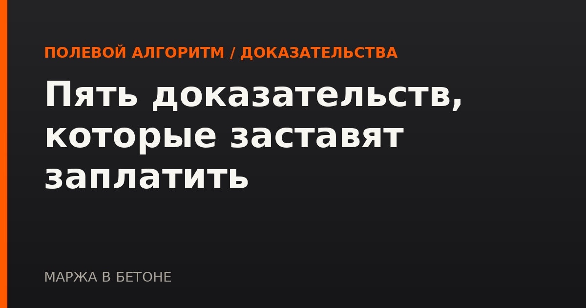

ПОЛЕВОЙ АЛГОРИТМ / ДОКАЗАТЕЛЬСТВА
Пять доказательств, которые заставят заплатить

Работы выполнены. Объект стоит. Бригада ушла месяц назад. Заказчик говорит: «А чем вы докажете, что делали именно вы и именно в этом объёме?» И вы понимаете, что доказывать нечем: акты не подписаны, журнал заполнялся задним числом, фотографии в телефоне прораба без дат и привязки к месту. Объём есть в бетоне, но его нет в документах — а платят по документам.
Почему доказательства нельзя собрать потом
Ключевая ошибка — считать, что доказательства нужны только при споре. К моменту спора часть работ уже закрыта конструкциями, техника вывезена, рабочие уволились или уехали на другой объект. Доказательство фактического выполнения создаётся в тот день, когда работа делается, и почти не создаётся позже.
Вторая ошибка — собирать один тип доказательств. Одна фотография без даты, одна запись в журнале без подписи заказчика, один акт без приложений легко оспариваются по отдельности. Работает связка: несколько независимых источников, которые подтверждают друг друга по дате, объёму и месту.
Пять типов доказательств
| Доказательство | Что именно подтверждает |
|---|---|
| Общий журнал работ с отметками | Кто, когда и какой объём выполнял. Главная ценность — ежедневность и подписи представителей обеих сторон |
| Акты скрытых работ | То, что физически невозможно проверить после закрытия конструкций: армирование, гидроизоляция, скрытые коммуникации |
| Датированная фотофиксация с привязкой | Состояние объекта на конкретную дату. Без метки места и даты доказательная сила близка к нулю |
| Исполнительные схемы и обмеры | Фактические геометрические параметры — то, что можно сверить с проектом и объёмом в КС-2 |
| Переписка с датами получения | Что вы уведомляли, а заказчик знал и не возражал. Молчание в ответ на уведомление тоже работает |
Как связать доказательства между собой
- Единая нумерация по объёмам. Один и тот же объём в журнале, акте скрытых работ, фотофиксации и КС-2 должен называться одинаково — с одной позицией сметы. Иначе связь придётся объяснять словами.
- Дата присутствует везде. Не «июль», а конкретный день. Фотография без даты и журнал с датой ссылаются друг на друга только через дату.
- Место указано так, чтобы его нашли. Оси, отметки, номер помещения — не «второй этаж, слева».
- Реестр передачи. Каждый переданный документ фиксируется с датой и способом передачи. Комплект, о получении которого нет доказательства, юридически не передан.
Что делать, если доказательств уже не хватает
- Соберите то, что есть, и выпишите объёмы, по которым доказательства слабые или отсутствуют — спорить придётся именно по ним.
- По слабым объёмам ищите косвенные подтверждения: заявки на материалы, товарные накладные, путевые листы техники, табели рабочих, показания приборов учёта.
- Направьте заказчику уведомление о готовности к приёмке с описью и предложением провести совместный осмотр. Отказ или молчание сами становятся доказательством.
- Проверьте по договору порядок оформления акта в одностороннем порядке — в ряде случаев он допустим, но только при точном соблюдении процедуры уведомления.
Материал носит информационный характер: перспектива конкретного спора зависит от условий договора и полноты документов, поэтому решения по спорным объёмам стоит принимать после проверки профильным специалистом.
БЕСПЛАТНО
Чек-лист «КС подписаны, денег нет: первые 7 проверок»
С чего начать, когда объём закрыт, а оплата не приходит: алгоритм проверки, калькулятор срока оплаты, перечень документов.
Скачать бесплатно →ПЛАТНЫЙ КОМПЛЕКТ
Комплект «ПТО без замечаний»
Акты скрытых работ, карточка исполнительной схемы, общий журнал работ, журнал входного контроля, реестр исполнительной документации, реестр паспортов и сертификатов, алгоритм работы с замечаниями. 10 файлов.
19 900 ₽
Купить комплект →